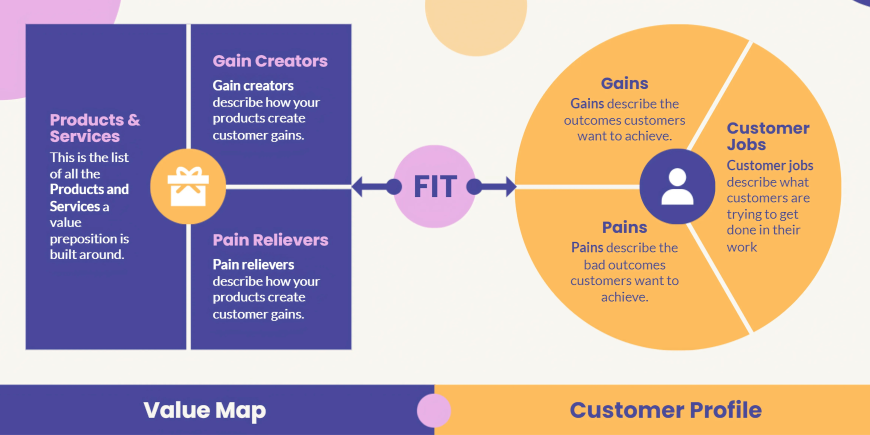

Unlocking Customer Insights: Lessons from the Value Proposition Canvas Lecture
What I Learned About VPC
The Value Proposition Canvas (VPC) is a tool that aligns a product or service with customer needs by focusing on two key areas: the customer profile and the value proposition. The customer profile helps identify what jobs customers want to accomplish, their pain points, and the gains they expect. Meanwhile, the value proposition shows how the product can address these needs and solve their problems.
From the lesson, I learned that identifying customer pain points is crucial for creating products that not only work but genuinely improve the user experience. The VPC ensures that creators focus on what matters most to customers, making it a vital framework for product development.
How We Created Our VP Statement
We developed our VP statement by conducting interviews with potential users like Alexandra Jagonos and Trisha Abigail Mancawan. Their feedback helped us identify key issues in the pet adoption process, particularly the lack of visibility and clear information about adoptable animals.
“Bringing paws and people together.”
How We Formulated Our VPC Statement
To craft our VPC statement, we held a Google Meet session to brainstorm values that would benefit both rescue centers and adopters. With guidance from our instructor and input from our interview data, we structured our statement to emphasize how our app simplifies the adoption process and increases pet visibility.
The VPC statement reflects our app’s ability to solve common adoption issues, such as unclear processes and overlooked pets. It solidified the app’s value in making the adoption journey smoother and more transparent for all parties involved.
Developing Our VPC
We built our Value Proposition Canvas by categorizing insights from our interviews into customer jobs, pains, and gains. We identified that adopters want to easily find pets that match their lifestyle, and they face challenges like confusing application processes and hidden fees. We addressed these pains with features such as real-time updates and simplified paperwork.By mapping customer needs and frustrations to our value proposition, we ensured that our app provides meaningful solutions. Features like expert tips for new pet owners and health information tracking were added to address customer gains, making the app user-friendly and helpful throughout the adoption process.